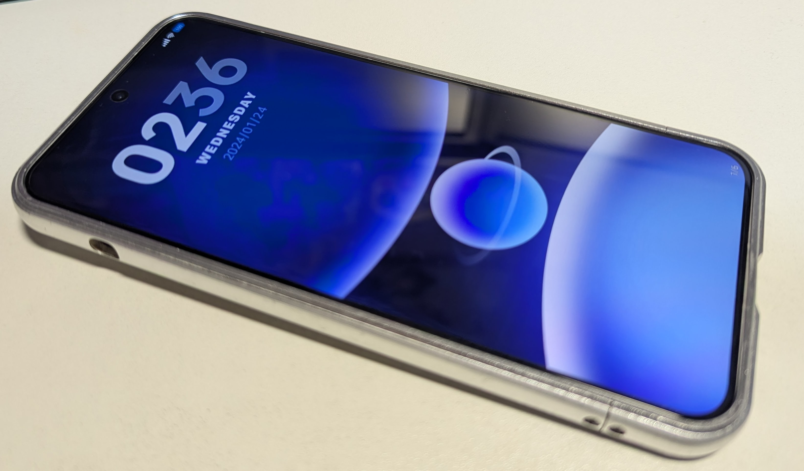
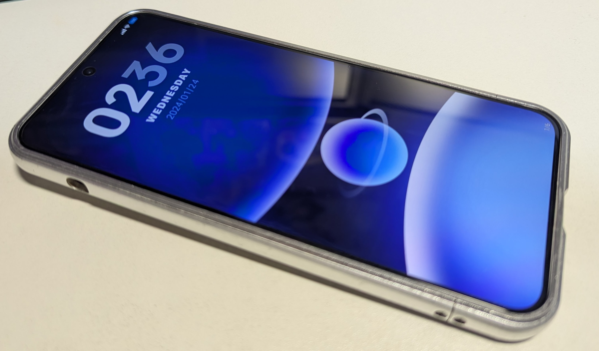
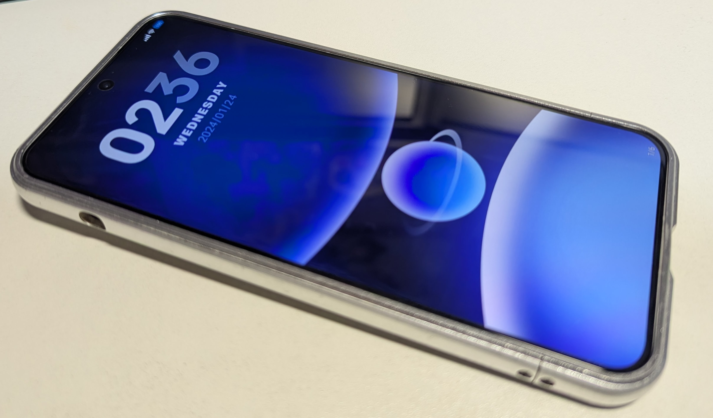
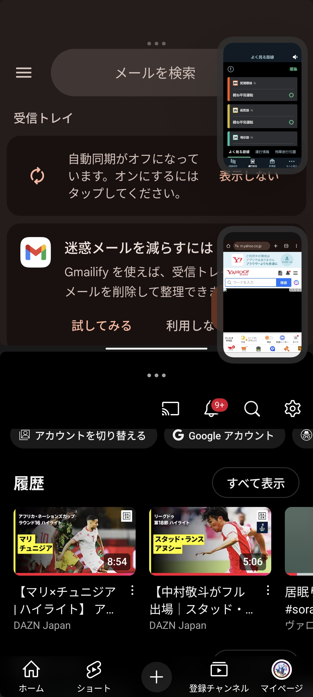
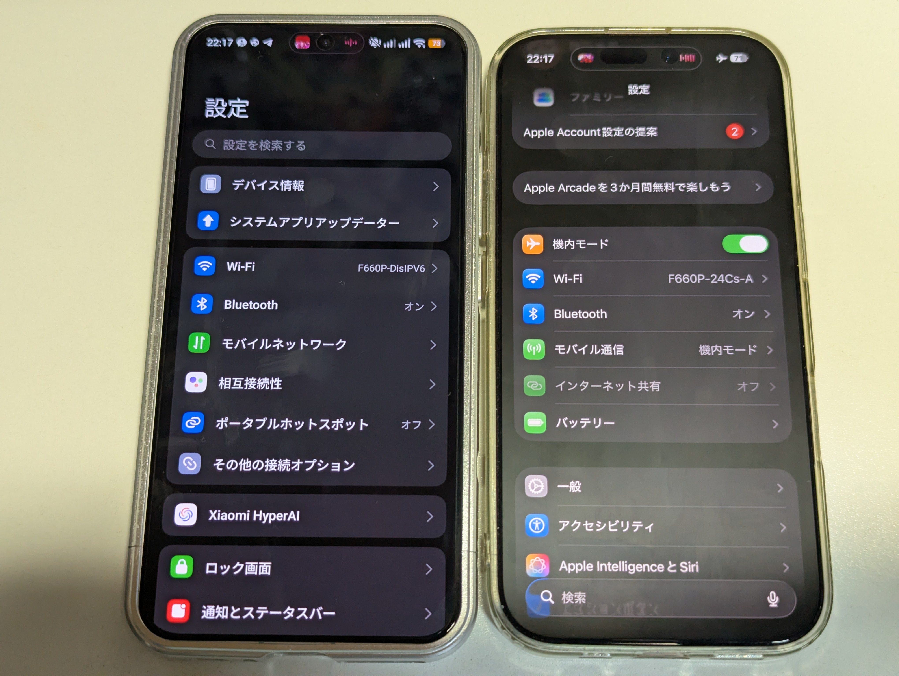
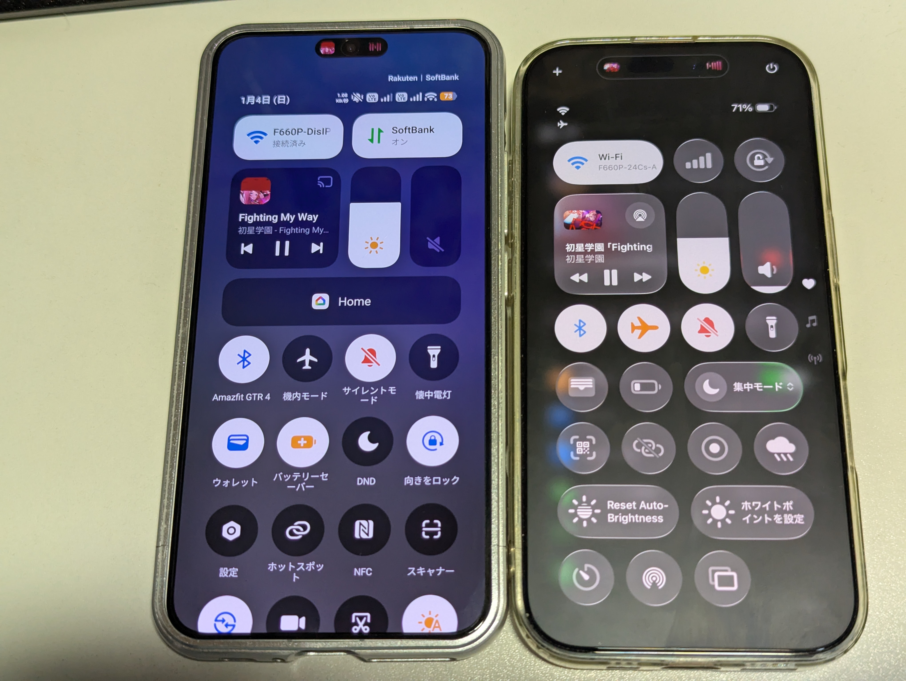

Xiaomiから発売されている最新スマートフォンをレビュー。
| Xiaomi 15 | |
|---|---|
| 発売日(日本) | 2025年4月1日 |
| CPU | Snapdragon 8 Elite |
| 画面サイズ | 6.36インチ |
| 解像度 | 2670×1200 |
| パネル | AMOLED |
| カメラ | ライカSummilux光学レンズ 5000万画素標準 5000万画素望遠 5000万画素超広角 |
| 認証機能 | 顔/画面内指紋認証 |
| バッテリー | 5240mAh 90W有線充電/50W無線 |
| 価格 | 123,000円～ |
CPUやカメラ、バッテリーまわりは完璧。一方でSuicaなどの非接触型決済に必要なFelicaは非搭載。
場合によっては財布用途のサブ端末が必要かも。

コンパクトなボディに曲面が少なめな本体は板に近いものの様に感じられる節がある。 一時期流行ったエッジディスプレイや鏡面に近いバックガラスは見直され、フィルムが貼りやすいフラットディスプレイ、指紋が目立ちにくい磨りガラスでシンプルなデザイン。
最新のOSとトップクラスのCPUを積んでるだけあって性能面では文句がない。 重たい処理もスムーズ。他にも90Wの高速充電、LEICA仕込みのカメラとHyperOSの独自機能によってもたらされる 機能により使い勝手が向上している。

筆者が特に気に入っている機能はこのマルチタスク機能で、最大4つの画面を起動することが可能。
ブラウザを操作しながら決済アプリを待機させておいたり、なにかと見比べるときに役に立つ。
簡易的なパソコンのように利用できる。

好みが分かれる点とすればHyperOSの使い心地だ。 素のAndroidの原型を留めないほどカスタムされたHyperOSはiOSのような見た目を連想させる。 他社のAndroid機種から乗り換えたときに戸惑いを感じるだろう。逆にiPhoneから切り替えた場合はそれほど操作性に差を感じない。
コスパの良い機種。グローバルと同時期にリリースするためにFelicaなどのローカライズは犠牲になったが、アップデートが早くなるメリットもある。
eSIM対応端末は物理SIMが1枚のみがほとんどだがこの端末はデュアル物理SIMとeSIMにも対応している貴重な端末。
クリックでページ移動します